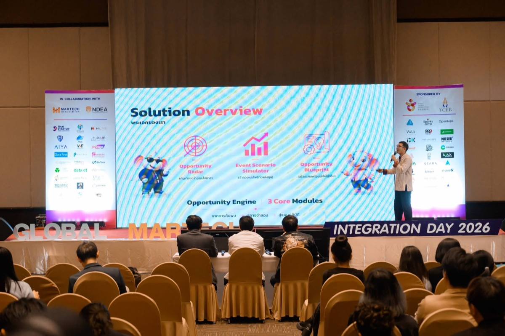
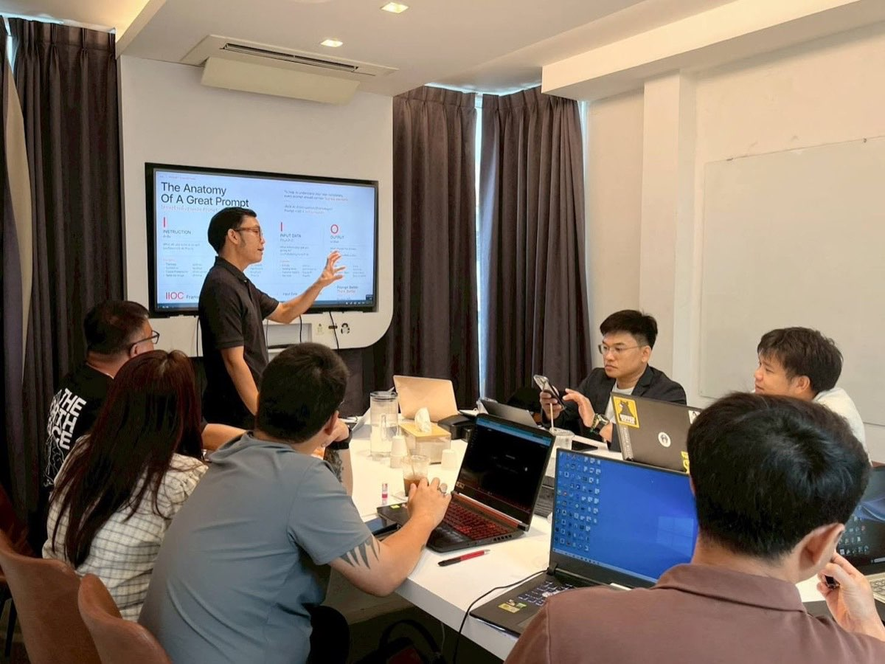
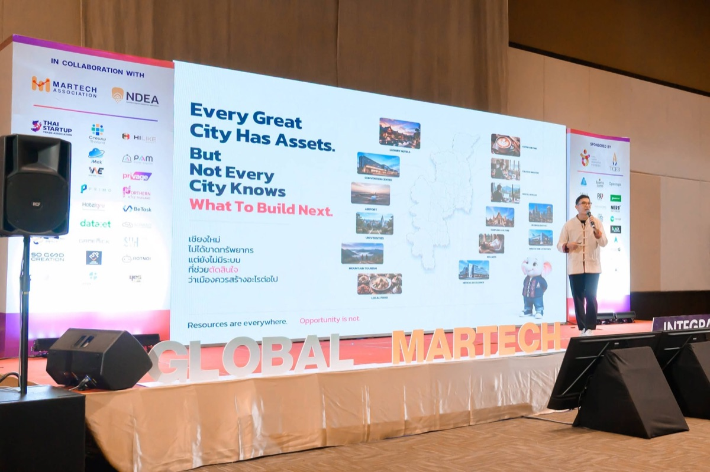
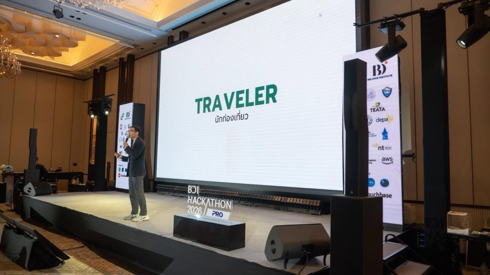
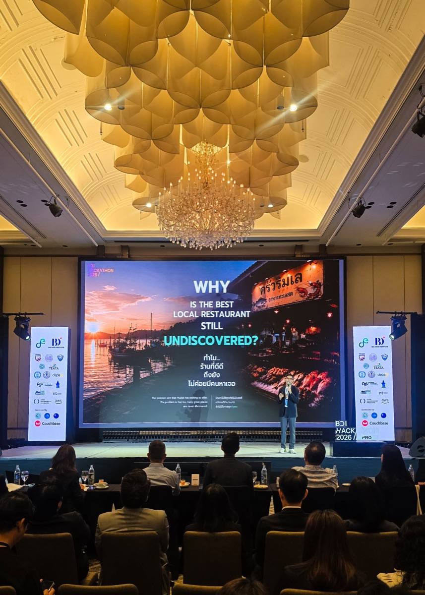

Best Technology Utilization of the Year
Received this award at Global MarTech Integration Day 2026, Chiang Mai, in collaboration with NDEA. รับรางวัลในงาน Global MarTech Integration Day 2026 เชียงใหม่ ร่วมกับ NDEA
Hemmawit Markpong
Psychology · Marketing Strategy · Communication & Learning
Hello, I'm A.Amp. My background and expertise are in psychology. I have worked as an educator, psychologist, and counseling professional before expanding into business management, marketing strategy, and communication. สวัสดีครับ ผมอาจารย์แอ๋ม มีพื้นฐานและความเชี่ยวชาญด้านจิตวิทยา ผ่านการทำงานในบทบาทอาจารย์ นักจิตวิทยา และผู้ให้คำปรึกษา ก่อนจะต่อยอดมาสู่งานบริหารธุรกิจ กลยุทธ์การตลาด และการสื่อสาร
I'm interested in how people think, learn, and make decisions—and what helps them understand a challenge more clearly and move forward. When someone brings me a challenge, I like to begin by listening. What is happening now? What constraints are they working with? What would they like to change? สิ่งที่ผมสนใจคือ คนเราคิด เรียนรู้ และตัดสินใจอย่างไร รวมถึงอะไรที่จะช่วยให้เรามองเห็นปัญหาชัดขึ้นและก้าวต่อไปได้ เวลามีคนเอาโจทย์มาคุย ผมอยากฟังให้เข้าใจก่อนครับว่า ตอนนี้กำลังเจออะไร มีเงื่อนไขอะไรอยู่ และอยากเห็นอะไรเปลี่ยนแปลง
I draw on psychology to guide how I listen, ask questions, understand motivation, and design learning experiences. My aim is to help people see their options, understand the reasoning behind them, and put our work together into practice. ผมนำความรู้ด้านจิตวิทยามาใช้ในการฟัง ตั้งคำถาม ทำความเข้าใจแรงจูงใจ และออกแบบการเรียนรู้ เป้าหมายคือช่วยให้คนที่ทำงานด้วยมองเห็นทางเลือก เข้าใจเหตุผล และนำสิ่งที่คุยกันไปใช้ต่อได้จริง
Today, I serve as CEO of KidKid Marketing and KAEN SCHOOL, and I'm developing ways to bring AI into work and learning. If you're exploring how to develop your business, improve your communication, or support your team's learning, let's start with a conversation. ปัจจุบันผมเป็น CEO ของคิดคิด มาร์เกตติ้ง และ KAEN SCHOOL และกำลังพัฒนาการนำ AI มาใช้กับงานและการเรียนรู้ ถ้าคุณกำลังมองหาแนวทางพัฒนาธุรกิจ การสื่อสาร หรือการเรียนรู้ของทีม ลองเริ่มจากการพูดคุยกันครับ
I earned my bachelor's and doctoral degrees from the Faculty of Education at Chiang Mai University, and my master's degree from its Faculty of Humanities. ผมศึกษาที่มหาวิทยาลัยเชียงใหม่ทั้งสามระดับ โดยสำเร็จการศึกษาระดับปริญญาตรีและปริญญาเอกจากคณะศึกษาศาสตร์ และปริญญาโทจากคณะมนุษยศาสตร์
My previous roles include guidance teacher at The Prince Royal's College, special lecturer at Chiang Mai Rajabhat University, psychologist at a boys' welfare home in Chiang Mai, and lecturer at Chiang Mai University. I have also worked in care and counseling support. ประสบการณ์ที่ผ่านมา ได้แก่ อาจารย์สอนแนะแนวที่โรงเรียนปรินส์รอยแยลส์วิทยาลัย อาจารย์พิเศษที่มหาวิทยาลัยราชภัฏเชียงใหม่ นักจิตวิทยาที่สถานสงเคราะห์บ้านเด็กชายเชียงใหม่ และอาจารย์ที่มหาวิทยาลัยเชียงใหม่ รวมถึงงานด้านการให้คำปรึกษาและการดูแลสนับสนุน
I later moved into business management and creative work, connecting my understanding of people with the practical demands of marketing, communication, and running a business. ต่อมาผมได้ทำงานบริหารธุรกิจและงานสร้างสรรค์ ซึ่งเปิดโอกาสให้เชื่อมความเข้าใจเรื่องคนเข้ากับการตลาด การสื่อสาร และการลงมือทำในบริบทธุรกิจ
I begin by listening — what's happening now, what constraints you're working with, and what you'd like to change. เริ่มจากการฟัง — ตอนนี้กำลังเจออะไร มีเงื่อนไขอะไรอยู่ และอยากเห็นอะไรเปลี่ยนแปลง
I draw on psychology to understand motivation and the reasoning behind each option, not just the surface request. นำความรู้ด้านจิตวิทยามาใช้ทำความเข้าใจแรงจูงใจและเหตุผลเบื้องหลัง ไม่ใช่แค่โจทย์ที่เห็นผิวเผิน
Together we design a strategy or a learning experience that fits your specific situation — not a one-size-fits-all template. ออกแบบกลยุทธ์หรือการเรียนรู้ที่เหมาะกับสถานการณ์ของคุณโดยเฉพาะ ไม่ใช่สูตรสำเร็จรูป
The goal is always a next step you can actually use — a clearer understanding, a practical plan, or work you can take away. เป้าหมายคือขั้นตอนถัดไปที่นำไปใช้ได้จริง ไม่ว่าจะเป็นความเข้าใจที่ชัดขึ้น แผนที่เริ่มทำได้ หรือผลงานที่นำกลับไปใช้ต่อ
Received this award at Global MarTech Integration Day 2026, Chiang Mai, in collaboration with NDEA. รับรางวัลในงาน Global MarTech Integration Day 2026 เชียงใหม่ ร่วมกับ NDEA

Presented a solution with three core modules — Opportunity Radar, Event Scenario Simulator, and Opportunity Blueprint. นำเสนอโซลูชัน 3 โมดูลหลัก — Opportunity Radar, Event Scenario Simulator และ Opportunity Blueprint

A workshop teaching the IIOC framework for writing AI prompts that get the results you want. เวิร์กช็อปสอนเฟรมเวิร์ก IIOC สำหรับการเขียนพรอมต์ AI ให้ได้ผลลัพธ์ที่ต้องการ

A talk at Global MarTech x MICE City on using data to decide what a city should build next. บรรยายในงาน Global MarTech x MICE City ว่าด้วยการใช้ข้อมูลตัดสินใจว่าเมืองควรสร้างอะไรต่อไป

A talk on "Traveler" — analyzing tourist segment data. บรรยายหัวข้อ "Traveler" การวิเคราะห์ข้อมูลกลุ่มนักท่องเที่ยว

A talk at BDI Hackathon on why great local restaurants go undiscovered. บรรยายในงาน BDI Hackathon ว่าด้วยปัญหาการค้นพบร้านอาหารท้องถิ่นคุณภาพ
A.Amp has a rare gift — he can take a dense psychology concept and turn it into something a room full of business owners immediately understands. I've sat in on his workshops just to learn how he teaches. อาจารย์แอ๋มมีพรสวรรค์ที่หาไม่ค่อยได้ครับ เอาแนวคิดจิตวิทยาที่ซับซ้อนมาเล่าให้เจ้าของธุรกิจทั้งห้องเข้าใจได้ทันที ผมยังแอบนั่งฟังเวิร์กช็อปของเขาเพื่อเรียนรู้วิธีสอนเลยครับ
We talked for one afternoon about where our marketing was stuck, and I walked away with a plan I actually understood — not just a deck full of buzzwords. คุยกันแค่บ่ายเดียวเรื่องที่การตลาดของเราติดขัด แล้วผมได้แผนที่เข้าใจจริงกลับไป ไม่ใช่แค่สไลด์เต็มไปด้วยศัพท์การตลาด
I came to the AI + Canva class with zero confidence. By the end I'd made a real post for my shop and knew exactly how to make the next one myself. มาเข้าคลาส AI + Canva แบบไม่มั่นใจอะไรเลยครับ พอจบคลาสได้โพสต์จริงของร้านตัวเองออกมา แล้วรู้วิธีทำชิ้นต่อไปเองด้วย
I think you should start with the work you're already stuck on. Pick one thing, try it, and see if it actually helps. ผมว่าควรเริ่มจากงานที่คุณติดอยู่ก่อน เลือกมาสักเรื่อง ลองทำดู แล้วดูว่ามันช่วยได้จริงไหม
Read more → Business & SystemsI've been thinking about this with AJA — from the first questions we ask, to the day we actually talk, what should a customer get along the way? ผมคิดเรื่องนี้อยู่กับ AJA — ตั้งแต่คำถามแรกที่เราถาม ไปจนถึงวันที่ได้คุยกันจริง ลูกค้าควรได้อะไรระหว่างทางบ้าง
Read more → Learning & WorkshopsWhen I design a class, I think about the work a learner can walk away with — here's why the AI + Canva class exists, and what I want people to get from it. ตอนออกแบบคลาส ผมคิดถึงงานที่ผู้เรียนจะได้ติดตัวกลับไป — นี่คือเหตุผลที่คลาส AI + Canva เกิดขึ้น และสิ่งที่ผมอยากให้ผู้เรียนได้รับ
Read more →Interested in working together, have a question, or just want to say hi? Send an email. สนใจร่วมงาน มีคำถาม หรือแค่อยากทักทาย — ส่งอีเมลมาได้เลย
hemmawitmarkpong@gmail.com